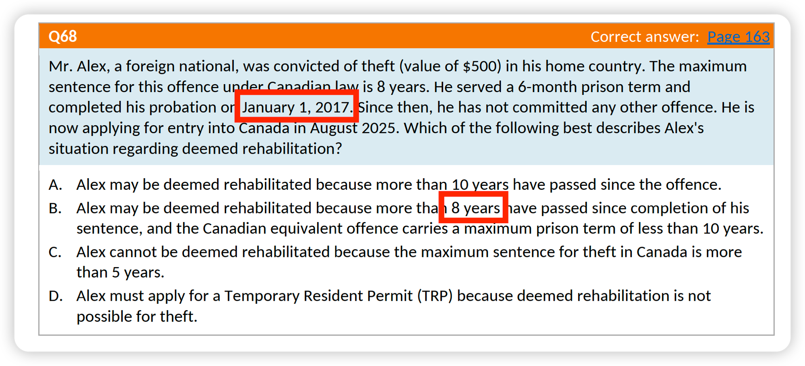
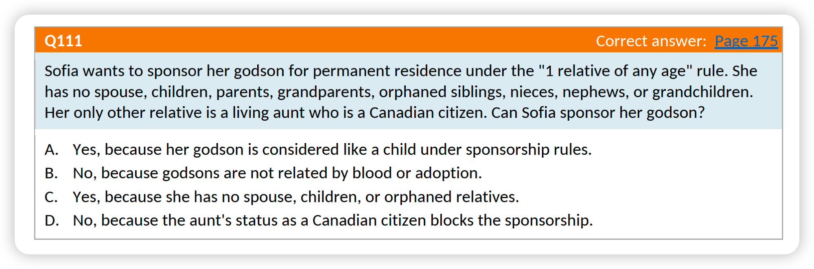

Updates of THE EPE CHEATSHEET (Plus Edition)
Contact UsOct 2026 Edition | Last updated: 2026-10-05

Table of Contents
Standard
Plus Only
Standard Updates
Plus Only Updates
Update #p1 — Q46 Explanation: removal order type corrected from deportation order to exclusion order
Original Text
| Option | Original explanation |
|---|---|
| A | "Submitting a Temporary Resident Visa alone is insufficient after a deportation order." |
| D | "There is no automatic expiration of a deportation order after five years. Unlike an Exclusion Order, which expires after one or two years depending on the case, a deportation order is indefinite unless authorization is granted via ARC." |
Updated Text
| Option | Updated explanation |
|---|---|
| A | "Submitting a Temporary Resident Visa alone is insufficient after an exclusion order for misrepresentation." |
| D | "Under IRPR 225(3), a misrepresentation exclusion order carries a five-year re-entry bar, so the five-year period in option D is accurate. However, after five years, re-entry is not unconditional: Jin must still obtain a visa or eTA if required and meet all admissibility requirements at the port of entry. Since Jin wants to return now — three years into the five-year bar — the ARC requirement is still active." |
Note: The correct answer (C) remains unchanged. Only the explanation has been updated to more precisely identify the removal order type and the applicable provision.
Update #p2 — Q26 Correct Answer: updated from C to D
The correct answer for Q26 was incorrectly listed as C. The correct answer is D. The question and explanation are unchanged.
Note: The correct answer has been updated from C to D. The question and explanation are unchanged.
Update #p3 — Q68: Question fully revised; correct answer remains B
Original Text

Updated Text
Mr. Alex, a foreign national, was convicted of theft (value of $500) in his home country. The Canadian equivalent offence, theft not exceeding $5,000, is a hybrid offence and carries a maximum sentence of 2 years' imprisonment if prosecuted by indictment. He served a 6-month prison term and completed his probation on January 1, 2019. Since then, he has not committed any other offence. He is now applying for entry into Canada in August 2027. Which of the following best describes Alex's situation regarding deemed rehabilitation?
A. Alex may be deemed rehabilitated because more than 5 years have passed since completion of his sentence.
B. Alex is not yet deemed rehabilitated because 10 years have not passed since completion of his sentence, although he may be eligible to apply for individual rehabilitation.
C. Alex cannot be deemed rehabilitated because theft is treated as an indictable offence for immigration purposes.
D. Alex must apply for a Temporary Resident Permit (TRP) because deemed rehabilitation is not possible for theft.
Explanation
Correct answer: B
Theft under $5,000 (CC s.334(b)) is a hybrid offence; under IRPA s.36(3)(a) it is treated as indictable for inadmissibility purposes. The maximum indictable sentence is 2 years, which is less than 10 years. For a single non-serious indictable offence (maximum penalty less than 10 years), deemed rehabilitation requires 10 years from sentence completion (IRPR s.18(2)(a)). Alex completed his sentence on January 1, 2019; the 10-year threshold would be reached on January 1, 2029. In August 2027, 10 years have not yet passed — Alex is therefore not yet deemed rehabilitated. However, as more than 5 years have passed since sentence completion, Alex may be eligible to apply for individual rehabilitation.
• A. Incorrect — 5 years is not sufficient for deemed rehabilitation; it may allow an application for individual rehabilitation.
• C. Incorrect — an indictable-equivalent offence punishable by less than 10 years may still qualify for deemed rehabilitation once the 10-year period has elapsed.
• D. Incorrect — a TRP is not automatically required; other rehabilitation options may be available.
Ref: IRPA s.36(3)(a); IRPR s.18(2)(a); CC s.334(b)
Note: The correct answer (B) remains unchanged.
Update #p4 — Q111: Revised question; correct answer updated from B to C
Original Text

Updated Text
Sofia, a Canadian citizen living in Canada, wants to sponsor her adult cousin for permanent residence under the "1 relative of any age" provision. Sofia has no spouse or partner, children, parents, grandparents, siblings, nieces, nephews, or grandchildren. Other than the cousin she wishes to sponsor, her only living relative is an aunt who is a Canadian citizen living in Canada.
Can Sofia sponsor her cousin under this provision?
A. Yes, because her cousin is related to her by blood and Sofia has no immediate family members she can sponsor.
B. Yes, because Sofia's aunt is already a Canadian citizen and therefore does not affect her ability to sponsor another relative.
C. No, because Sofia has an aunt who is already a Canadian citizen.
D. No, because cousins can never be sponsored as members of the family class.
Explanation
Correct answer: C
Under IRPR 117(1)(h), a person may sponsor one relative of any age where the person being sponsored is a relative and the sponsor does not have certain specified relatives who either: are Canadian citizens, permanent residents, or persons registered as Indians under the Indian Act; or could otherwise be sponsored by the sponsor. IRCC specifically explains that the sponsor must not have a relative, including an aunt or uncle, who is already a Canadian citizen, permanent resident, or registered Indian.
Sofia's cousin is a blood relative and could potentially be sponsored under the "other relative" provision. However, Sofia has a living aunt who is a Canadian citizen. Therefore, Sofia does not meet the requirements of IRPR 117(1)(h).
• A is incorrect: Being related by blood is necessary, but it is not enough. Sofia must also satisfy the restrictions concerning her other relatives.
• B is incorrect: This is the key trap. Having an aunt who is already a Canadian citizen actually prevents Sofia from relying on this provision.
• D is incorrect: A cousin is not automatically excluded. A cousin may be sponsored as the "1 relative of any age" if all the requirements of IRPR 117(1)(h) are satisfied. IRCC even provides an example of an eligible cousin sponsorship.
Ref: IRPR s.117(1)(h); canada.ca — Who you can sponsor (other relatives)
Note: The correct answer has been updated from B to C.